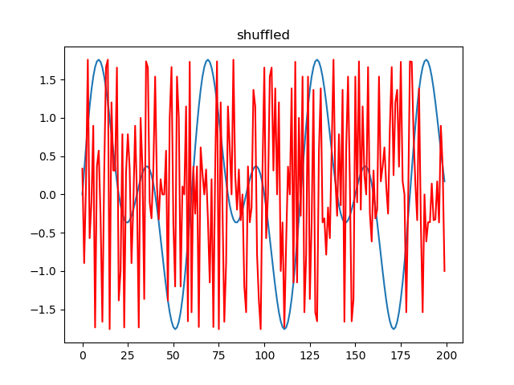
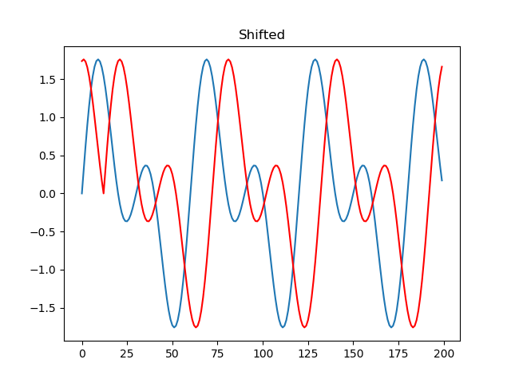
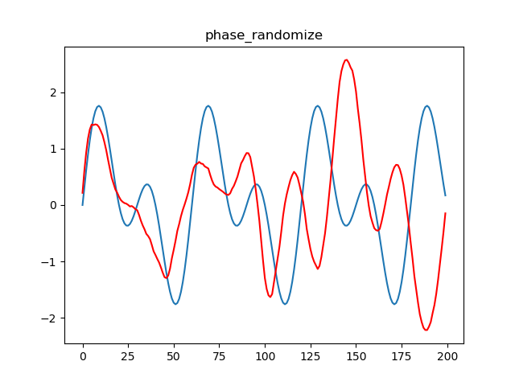
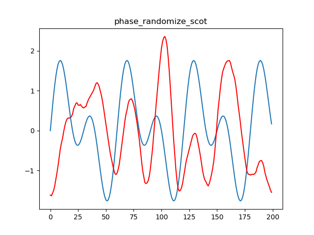

Note
Click here to download the full example code
Script showing various methods used to generate surrogate from a time series.¶
- 
- 
- 
- 
Out:
Surrogates OK.
Surrogates OK.
/Users/psripad/mne/jumeg/examples/connectivity/plot_surrogate_methods.py:50: UserWarning: Matplotlib is currently using agg, which is a non-GUI backend, so cannot show the figure.
pl.show()
import numpy as np
import mne
from jumeg.jumeg_surrogates import Surrogates, check_power_spectrum
import matplotlib.pyplot as pl
mysurr = Surrogates.SimpleTestData()
# do shuffling
shuffled = mysurr.shuffle_time_points(mysurr.original_data)
pl.figure('shuffled')
pl.title('shuffled')
pl.plot(mysurr.original_data[0])
pl.plot(shuffled[0], color='r')
# do shifting
shifted = mysurr.shift_data(mysurr.original_data)
pl.figure('shifted')
pl.title('Shifted')
pl.plot(mysurr.original_data[0])
pl.plot(shifted[0], color='r')
# do phase randomization
phase_random = mysurr.randomize_phase(mysurr.original_data)
pl.figure('phase_randomize')
pl.title('phase_randomize')
pl.plot(mysurr.original_data[0])
pl.plot(phase_random[0], color='r')
# do phase randomize as in scot
phase_random_scot = mysurr.randomize_phase_scot(mysurr.original_data)
pl.figure('phase_randomize_scot')
pl.title('phase_randomize_scot')
pl.plot(mysurr.original_data[0])
pl.plot(phase_random_scot[0], color='r')
check_power_spectrum(mysurr.original_data, phase_random)
check_power_spectrum(mysurr.original_data, phase_random_scot)
pl.show()
Total running time of the script: ( 0 minutes 0.356 seconds)